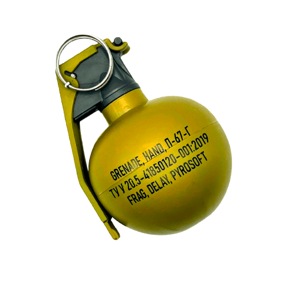

<section class="home" id="home">
    <div class="home-text">
        <h1> <span>Грана́та</span> — один з видів вибухової зброї, призначений для ураження живої сили і бойової техніки супротивника осколками й ударною хвилею, що утворюються від вибуху.</h1>
    </div>

    <div class="home-img">
        
    </div>
</section>
